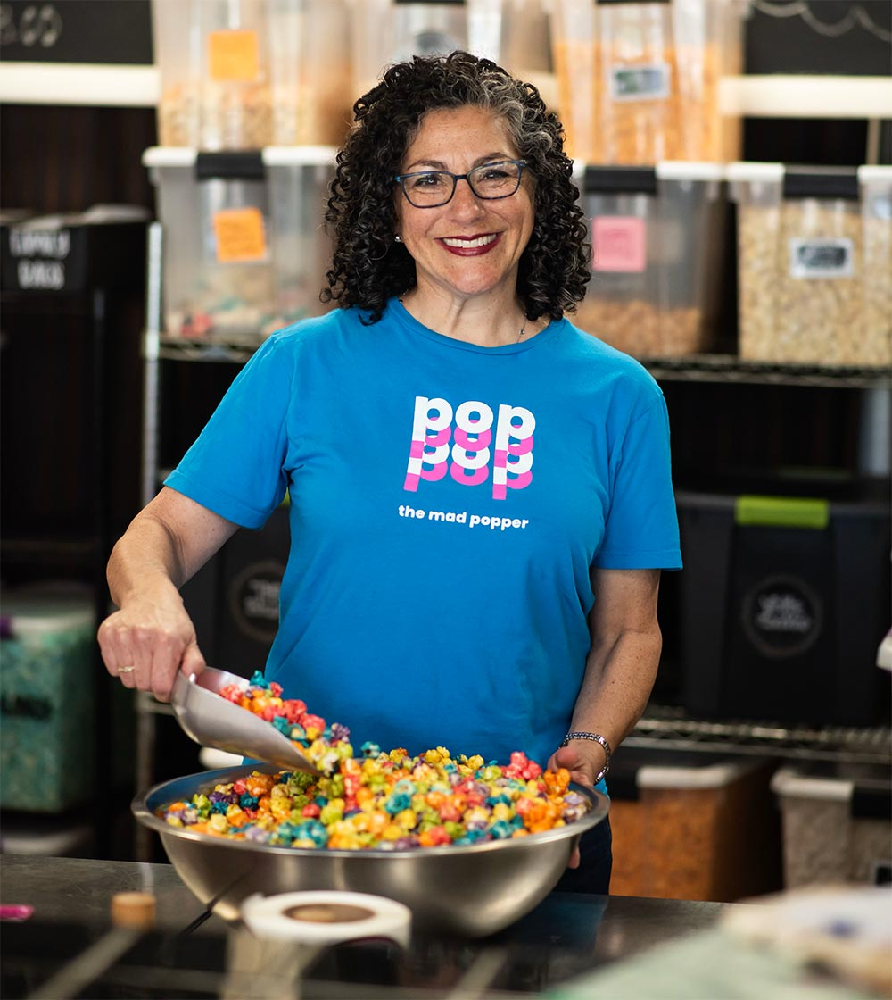

Meet Andrea
The Mad Popper was established in 2008. Andrea Ginsberg, a former elementary school teacher, became The Mad Popper on June 1, 2011.
The shop offers eight signature varieties along with rotating weekly specials. Choose from over 40 flavors on the menu: fill bags, buy tins, or create your own combination.
